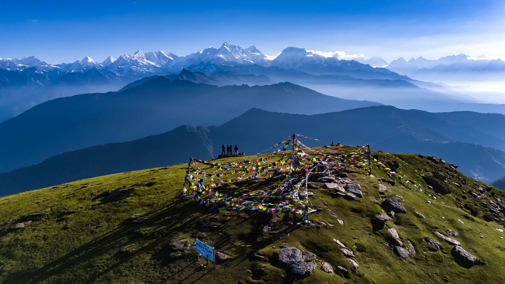

7-day trek to a 4,065 m summit with sunrise views of Everest, through Sherpa villages and Buddhist monasteries


Pikey Peak (4,065 m) is one of the finest viewpoints in the lower Solukhumbu, and the Pikey Peak Trek is a 7-day, moderate trek that reaches it through Sherpa villages, rhododendron forest and quiet teahouse settlements. From the summit at sunrise, the Himalaya stretches across the horizon, with Everest, Makalu and Kanchenjunga in view on clear mornings.
Most trekkers who want to see Everest head for the busy trails of the Khumbu. The Pikey Peak Trek takes a quieter line to the south. There are no flights to Lukla and no crowded lodges, just forest paths, stone-walled villages and a small number of fellow walkers. It suits travellers who want big mountain views without two weeks on the trail.
The cultural side of this trek is as strong as the views. The route passes through Sherpa settlements where prayer flags, mani walls and chortens line the trail, and where daily life still follows the rhythm of farming and the monastery calendar. Evenings in family-run teahouses give you time to sit by the stove, share a meal and hear about life in the hills.
After the summit, the trail drops to Junbesi, a peaceful Sherpa village in a wide valley. Here the itinerary slows down, with a full day to walk to Thupten Chholing, a large Tibetan Buddhist monastery that is home to a community of monks and nuns. It is a calm, unhurried day and one of the most memorable parts of the journey.
The trek ends with a walk down to Salleri, the headquarters of Solukhumbu district, and a long scenic drive back to the city. The two driving days are long, but they carry you deep into a part of Nepal that few visitors ever see, and the reward at the top of Pikey Peak makes every hour worthwhile.
You want to see Everest without flying to Lukla or joining the crowded Khumbu trails
You have a week and want a complete trek with a summit sunrise at its high point
You are curious about Sherpa culture and Tibetan Buddhist monasteries
You are comfortable with long road journeys at the start and end of the trip
You want a short drive to the trailhead: both road days are long (10 to 12 hours)
You prefer well-equipped lodges with hot showers and Wi-Fi every night
Best time: October and November give the clearest views of Everest and the eastern Himalaya, and March to May brings rhododendron blooms to the forest trails.
Cost: the price depends on group size and runs from $499 to $600 per person. It includes shared transport, meals, accommodation, guide and porter. No trekking permits are needed for this route. See the cost table.
Getting there: we drive from Kathmandu to Dhap in about 10 hours to start the trek. The trek ends at Salleri, with a drive of about 12 hours back to Kathmandu.
Looking for more? Explore our other treks in Nepal, or plan a custom trek around your dates.
We leave Kathmandu early in the morning for the long drive east to Dhap, around 235 km.The road is mostly paved, except for a section by the side of Roshi Khola. The road winds through terraced hills, river valleys and small bazaar towns, with tea and lunch stops along the way. It is a full day on the road, taking around 10 hours, and we arrive at our teahouse in Dhap in the evening, ready for the trek to begin.
From Dhap itself, we can see Mount Everest and Lhotse during clear weather. Our walking begins today. After breakfast, we set off from Dhap on a trail that climbs through forest and open hillsides, passing small farming settlements along the way. The walk today will mostly be on a road, however with very few or no vehicles at all. We stop for lunch on the trail and continue at an easy pace to Jhapre, where we spend the night in a local teahouse.
With the clear weather, we can wake up with the views of Everest, Lhotse and Makalu mountain peaks.
This is the longest walking day of the trek. From Jhapre, we follow the trail via Boudha, climbing steadily through rhododendron and pine forest. As we gain height, the forest opens up and the first views of the high Himalaya begin to appear. The first half of the hike today, is also mostly on road but from our lunch point at Baudha, we leave the road and get on the trekking trail. We reach Pikey Base Camp in the afternoon and rest for the early start tomorrow.
We wake before dawn and climb to the summit of Pikey Peak, at 4,065 m, the high point of the trek. On a clear morning, the first light spreads across a long chain of peaks, with Everest, Makalu and Kanchenjunga, Annapurna and Langtang among them. We take our time at the top, surrounded by prayer flags, before returning to base camp for breakfast.
We then begin the long descent to Junbesi, a beautiful Sherpa village set in a wide, green valley.Initially, we go a bit steep downhill to Mane Bhanjyang, where we stop for lunch. Then we gain a bit of elevation for half an hour before starting the descend again to Junbesi. The last couple of hours would be on the road again. The trail drops through forest and past chortens and mani walls before we reach the village and our teahouse for the next two nights.
Today is a gentler day. After breakfast, we walk from Junbesi to Thupten Chholing, a large Tibetan Buddhist monastery that is home to a community of monks and nuns. We spend time exploring the monastery grounds and, where possible, observe the daily rhythm of monastic life before walking back to Junbesi for a relaxed afternoon in the village.
We leave Junbesi after breakfast and walk down towards Salleri, the headquarters of Solukhumbu district. The trail passes through villages and farmland, gradually trading the quiet of the mountains for the bustle of a small hill town. We celebrate the end of the walking part of the trek with our team in Salleri.
On the final day, we set off early for the long drive back to Kathmandu, around 265 km. The road takes around 12 hours with breaks for tea and lunch, and we arrive in Kathmandu in the evening, where the trek ends.
No technical experience is needed, but the trek is rated Moderate. The longest walking day (Day 3) takes around 7 hours, and the summit morning on Day 4 starts before dawn at over 4,000 m. If you can walk comfortably for 5 to 7 hours on consecutive days, you will manage this trek well.
Yes. On a clear morning, the view from the summit of Pikey Peak takes in Everest along with Makalu, Kanchenjunga and many other peaks of eastern Nepal. Visibility is best in autumn and spring, and early morning is almost always clearer than the afternoon, which is why we climb for sunrise.
The highest point is 4,065 m at the summit, and you sleep at around 3,640 m at Pikey Base Camp. Some trekkers feel mild symptoms such as headache or tiredness at this height. The itinerary gains height gradually, and your guide is trained to watch for signs of altitude sickness. Drink plenty of water, walk at a steady pace and tell your guide if you feel unwell. If symptoms worsen, descending is always the right decision.
The drives are long. Day 1 from Kathmandu to Dhap is around 235 km and takes about 10 hours, and Day 7 from Salleri back to Kathmandu is around 265 km and takes about 12 hours. Both journeys are in private transport with regular stops for tea and meals, and both are included in the trek cost.
Thupten Chholing is a large Tibetan Buddhist monastery near Junbesi, home to a community of monks and nuns. We visit on a relaxed day hike on Day 5, giving you time to explore the monastery and experience the calm of the valley before returning to Junbesi.
Teahouses on this route are simple and family-run, with basic private or twin rooms and shared bathrooms. Facilities at Pikey Base Camp are more basic than in the villages. Meals are taken in a shared dining room, often around a warm stove, which is one of the nicest parts of the evening.
October and November give the clearest mountain views after the monsoon. March to May is also excellent, with rhododendrons in bloom through the forest sections. December and January are possible but cold at the summit and base camp. June to September is the monsoon season, when views are often hidden by cloud and the trails are wet.
No. The Pikey Peak Trek does not require any trekking permits, so there is no paperwork to arrange before you start.
The price is $499 to $600 per person depending on group size: $600 for one person, $530 for two, $510 for three to four and $499 for five or more. It includes private transport, meals, accommodation, guide and porter.
Mobile signal is available in many villages along the route, though it can be patchy at higher points. Wi-Fi is not reliable in the teahouses. We recommend downloading offline maps and letting family know you may be out of contact for parts of the trek.
Essentials include sturdy trekking boots, warm layers including a down jacket for the summit morning, a waterproof jacket, a warm hat and gloves, a headlamp for the pre-dawn climb, sunscreen, sunglasses, a reusable water bottle and a daypack. A warm sleeping bag is useful for the night at Pikey Base Camp. We will send you a full packing list after booking.
If you need to return early for any reason, there is no refund on the remaining trek cost. However, we will arrange comfortable accommodation for you for the number of nights that remain on your itinerary, at no extra charge. Please also see our full Cancellation Policy for details.